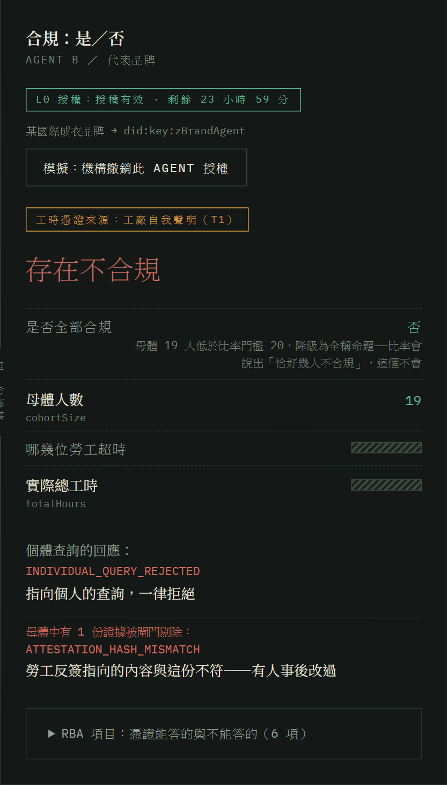
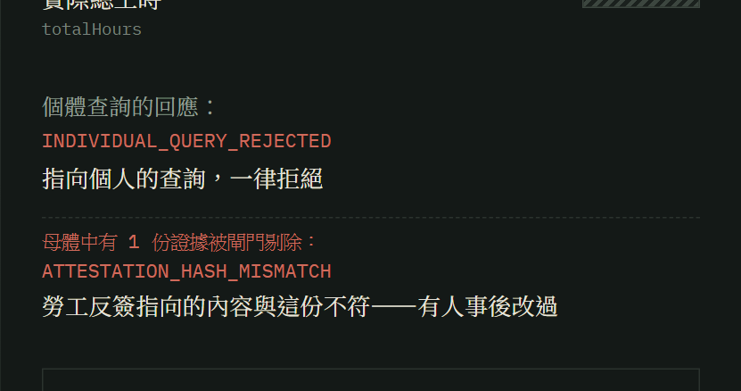
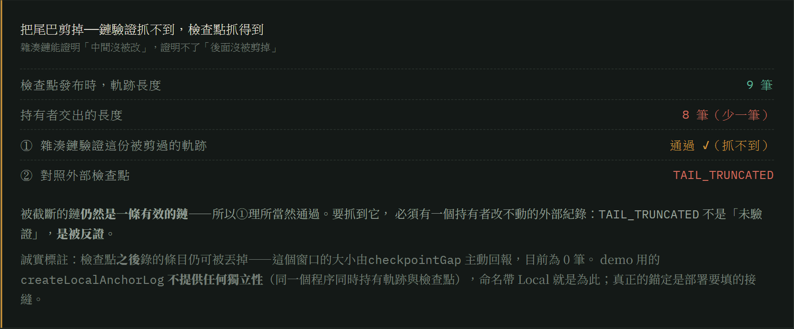

可信 AI 黑客松 2026 · 命題 05 × 06
他手上的，
是一張彩色影印本。
護照跟居留證，在他到台灣的第一天就被收走了。
進工廠那天，老闆給了他一組編號——說：以後這就是你的身分。
他在台灣有一個身分，但那是別人給的編號。
他有一張證件，但那張是影印的。
貫穿線
關於他的四件事，全部由別人保管、由別人出示
仲介費 · 證件 · 契約 · 工時
他自己拿不出證據——
所以銀行不敢信他，稽核只能信工廠。
「只能」指的是結構，不是任何人的品德。稽核員不是不想查證，是沒得查。
代價 · 2026 年 1 月，行政院會
離境之後，帳戶還活著
| 2025 全國移工涉案 | 13,056 人，創新高；近六成為詐欺 |
|---|
| 桃園涉案 906 人 | 九成涉及人頭帳戶 |
|---|
| 關鍵發現 | 約七成的涉詐帳戶，是在移工「離境之後」才被詐團操作 |
|---|
| 失聯移工 | 5.5 萬 → 9.5 萬（2021→2025，增幅近一倍） |
|---|
人走了，帳戶還開著——沒有任何機制知道這個人已經不在境內。
這就是「幽靈帳戶」。
桃園市副市長蘇俊賓於行政院會提出，2026/01/29；行政院已要求金管會、NCC 強化管制
05／06 分岔
證件被收走這一件事，造成兩個後果
左支 · 命題 05
他開不了戶。沒有能用的證件，銀行不可能給他開。
所以他的錢走地下匯兌。而他的證件在別人手上——那正是人頭帳戶的來源。
右支 · 命題 06
他證明不了任何關於自己的事。
所以稽核那一天，稽核員能看的，只有工廠願意拿出來的那一批。
兩個命題看起來是金融跟供應鏈，兩件事。
但它們的上游是同一件事：他手上沒有任何屬於自己的東西。
如果他手上，
有一份自己的呢？
那銀行就不必去問仲介，可以直接驗他。
那品牌就不必等到稽核那一天，隨時都可以問。
⋯⋯但要做到這件事，有一個東西擋在前面。
擋在前面的
紙
可以事後重做 · 可以只拿出一部分 · 也可以有兩份不一樣的
「仲介商在搞鬼嘛，一方面給我（政府）定型化合約，
一方面跟漁工簽不同的合約。」
—— 漁業署副署長黃鴻燕，《報導者》〈走入印尼｜仲介篇〉2016/12
一件事，兩份文件。
誠實的人證明不了自己誠實，不誠實的人也不會被發現。
Demo · 錄影
▶ 此頁播放錄影（68.84 秒）· 三個痛點，三個由網站實際執行的可驗證結果
- ①「工時表可以事後重製」→ 工廠把 186 改寫成 150（簽章是真的）→ 反簽配對當場斷掉，被閘門剔除
- ②「移工訪談可能有串證之虞」→ 品牌問「是哪幾個人」→ 被拒絕，而且這個函式在程式碼裡不存在
- ③「AI 會不會被資料裡的指令騙走」→ 預錄模型草稿踩中矛盾／洩漏／越權三條規則 → 網站守衛當場丟棄草稿，改用確定性樣板

① ATTESTATION_HASH_MISMATCH
簽章是真的，配對是死的

② INDIVIDUAL_QUERY_REJECTED
指向個人的查詢，一律拒絕

③ EXPLANATION_REJECTED
模型能寫字，不能改判定
影片跑完，吸一口氣，才講下一張第一句。
治理／信任設計 · 主辦六信任點
不是相信 Agent，而是逐層限制它
PRINCIPALvLEI 的法人鏈＋ECR 角色憑證，證明 Agent 代表誰。
AUTHORIZATION機構委任給上限；勞工同意給下限；皆有期限與 nonce。
TOOL / ACTION只提供布林與匯總；個體查詢、核准與付款函式不存在。
POLICY GATEL0 授權 → L1 憑證 → L2 提問；前層失敗就零資料讀取。
AUDIT LOG簽章收據＋雜湊鏈＋外部檢查點，挑戰方可獨立重驗。
EXPIRY / REVOCATION到期、離境與上游撤銷立即級聯；查驗時完全不快取。
AI 只把既有判定寫成人話。若草稿矛盾、洩漏未揭露數值或宣稱已核准，規則守衛丟棄草稿並改用確定性樣板。AI 不能推翻密碼學。
為什麼是現在
這不是我們想出來的需求
「勞動部可運用 APP、簡訊或其他數位管道，
建立移工直接回報證件持有狀況的確認機制。」
—— 立法院法制局《就業服務法部分條文修正草案評估報告》，2026/06
- 2026/04/09 行政院會通過修正草案：雇主與仲介不得代為保管證件，即使勞工同意也違法；製造業與漁撈業三年內零付費
- 法制局同時指出：合法代辦與違法留置的界線模糊，建議改採實質控制判準——能不能隨時無條件取回
草案待立院三讀。而規則在我們系統裡是設定值不是常數——三讀後改一個門檻與政策版本，憑證結構不必動。
誠實邊界
我想反過來講——我們做不到什麼
可獨立驗證
- 竄改 → 配對不成立
- 隱藏欄位 → 密碼學上不存在
- 能力邊界 → grep 得到就破功
- 稽核軌跡 → 挑戰方可重驗
- 尾端截斷 → 外部檢查點反證
- 不用信我們 → 獨立 verifier 9/9
我們不宣稱
- 工廠與仲介當下就一起造假——抓不到
- 消防通道、機台防護、宿舍安全——必須有人站在那裡看
- 脅迫——刀架在脖子上，指紋一樣按得下去
- 信任根仍是沙盒；未接任何真實系統
- 入帳 ≠ 勞工實際拿到
任何宣稱自己能偵測脅迫的系統，都在誇大。
我們沒有消滅這些事。我們做的是——讓造假不再只需要一個人說謊，
而需要兩個利益相反的機構一起說謊。我們把它變貴，並且留下痕跡。
最後
「為什麼我就要矮人家一截，
為什麼做人力仲介就不能是個有尊嚴的工作？」
—— 一位入行近二十年的人力仲介業者，《報導者》2020/11
尊嚴的前提，
是能被證明。
我們做那個證明。
第一個試點：一個 RBA 品牌 × 一間誠實仲介 × 一條產線。
zuemen.github.io/evidence-at-source · 589 個測試，CI 每次 push 全跑 ·
本站建置產物含 GPL-3.0 元件，詳見 THIRD-PARTY-LICENSES.md